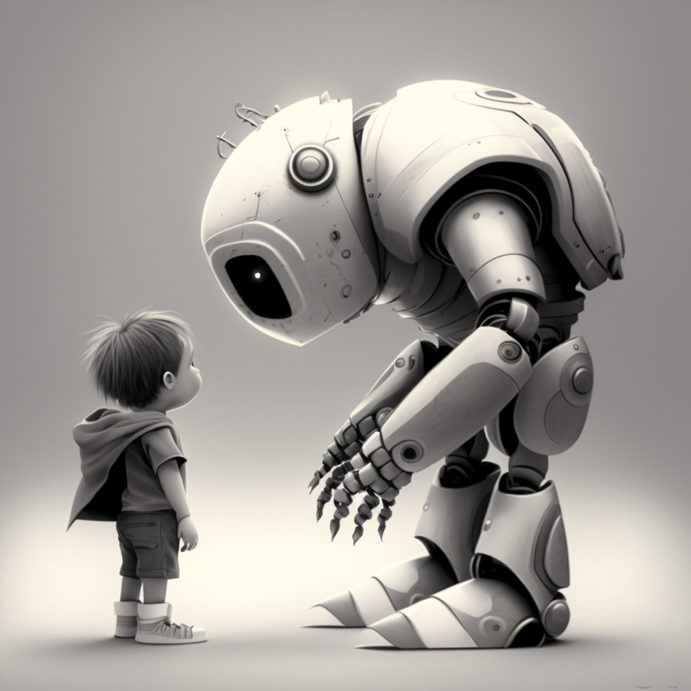

Character Empathy
Virtual reality has revolutionized the way we experience gaming, providing an immersive experience that was once thought impossible. However, one of the challenges that developers face when designing VR games is creating a strong emotional connection between the player and the in-game character. Our team has been working on a solution to this problem by implementing more realistic feeling through VR controller constraints. By constraining the player's movement and actions to mimic those of the in-game character, we hope to create a stronger sense of empathy between the player and the character. This approach aims to make the player feel more connected to the game world, making their experience more engaging and meaningful. We believe that this innovation has the potential to enhance the emotional impact of VR games and create a new level of immersion for players.
Damaged Eye
Reason
Our Character robot will start with only one eye, and later on, the player will have to find a way to unlock the other eye, otherwise the player will experience a limited sight through VR HeadSet.
How to implement
To have one missing eye, we will have to use 2 cameras instead of one to mimic the missing eye. Each camera will be set to target one eye.
For the missing eye, we will first need to set "Clear Flags" to "Solid Color" and set the color to black. Then we will need to set the "Culling Mask" to "Nothing" to make sure the camera will not render anything.
Later when we get the missing eye back we will set "Clear Flags" to "Skybox" and set the "Culling Mask" to "Everything" to make sure the camera will render everything.
{kind=link}
{kind=link}
{kind=link}
{kind=link}